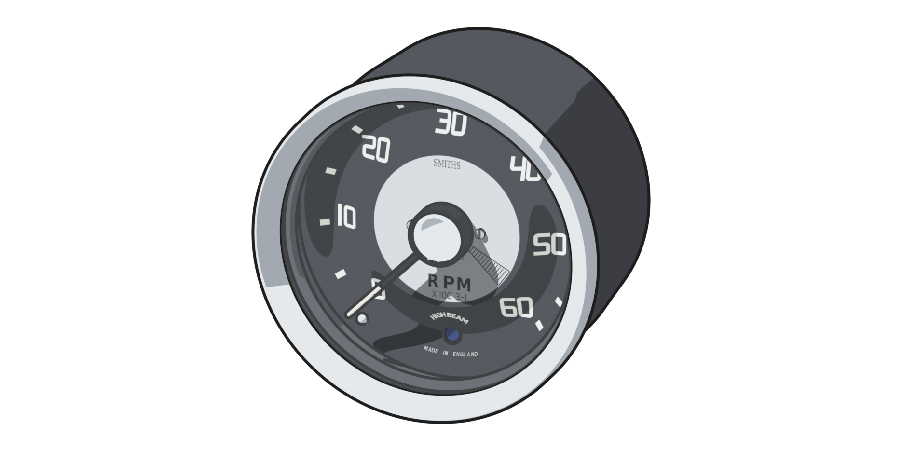
Installation
Rev C1
Manual 1.0
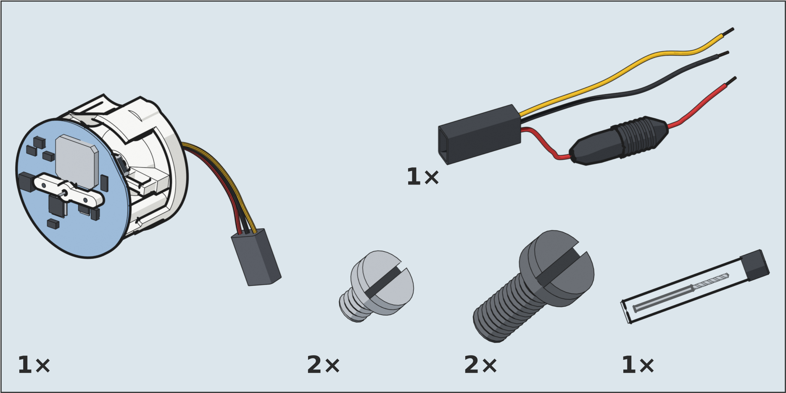
Check the box.
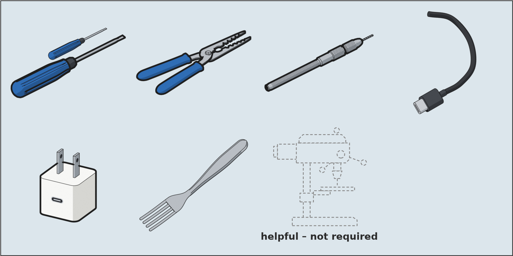
You will need these. A drill press helps but is not required.
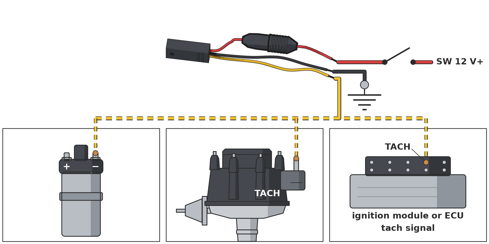
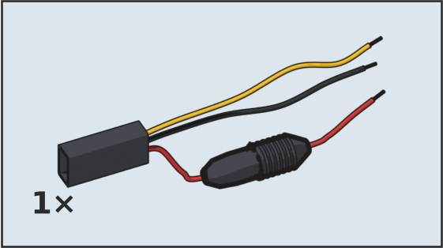
Red = switched 12 V+Black = groundYellow = tach signal (any one of these)
Negative-ground cars only. 12 V must switch off with the key. Leave the fuse in the pigtail.
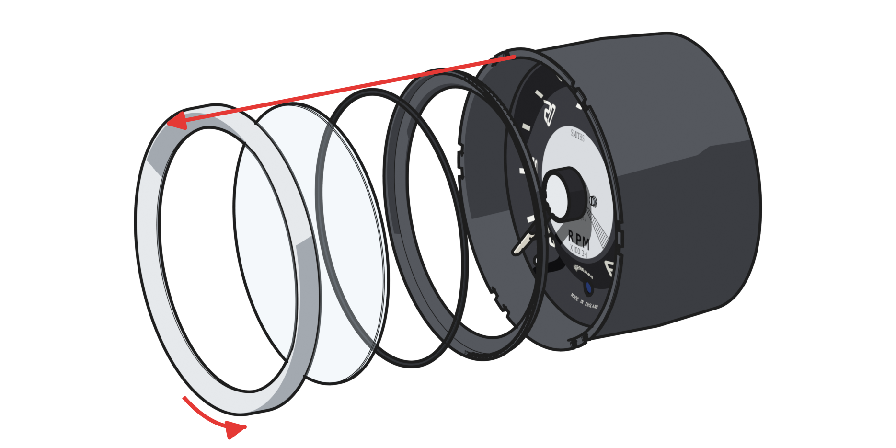
Remove the bezel stack: outer bezel, glass, seal, inner bezel.
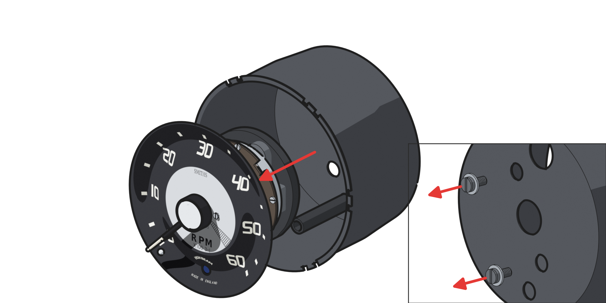
Undo the two rear screws and lift the whole mechanism out, faceplate and needle still attached. Mind the light tunnel.
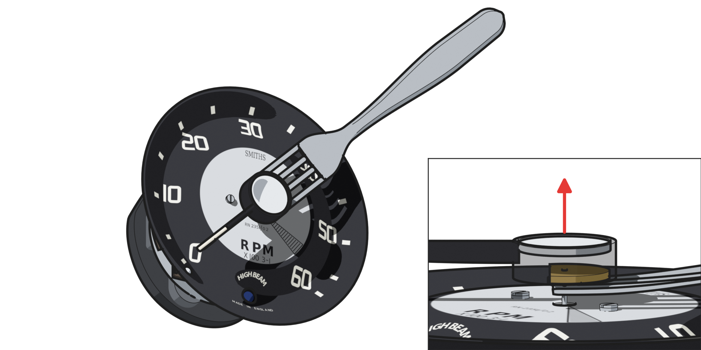
Lift the needle off with a fork.
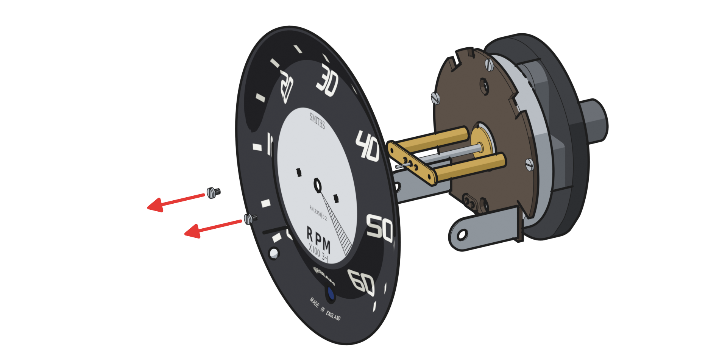
Undo the two faceplate screws and lift the faceplate off. Bag the mechanism and the old screws — keep them.
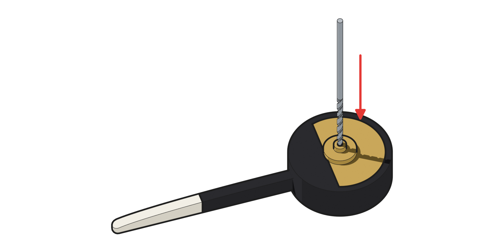
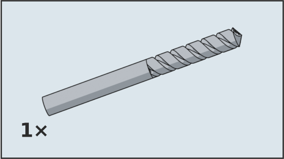
Use the supplied 0.95 mm bit to bore through the brass centre of the needle (roughly 3 mm), then slowly work the hole until it presses firmly on the motor shaft.
This step cannot be undone. Go slowly.
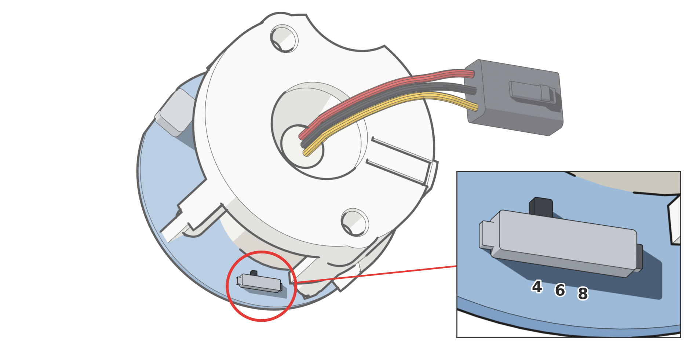
Set the cylinder switch to match your engine: 4, 6 or 8 cylinders.
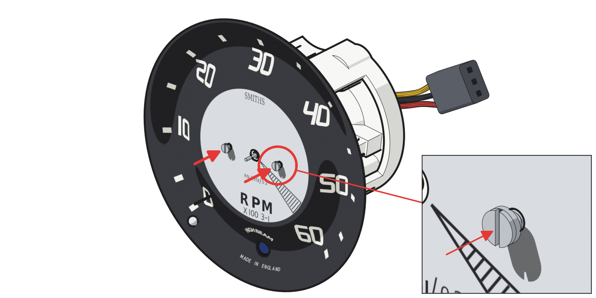
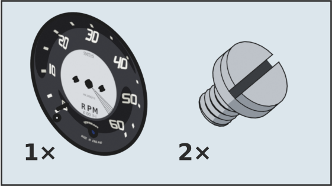
Fit the faceplate to the module with the two new M1.6 screws.
Do not overtighten!
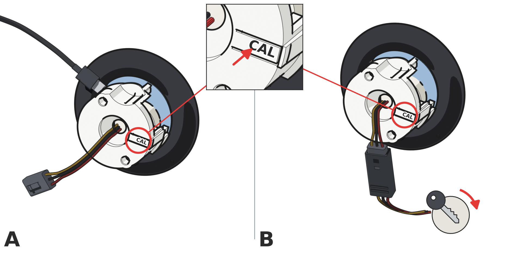
Power the module either way: USB-C from any charger, or the car with the key on. Press CAL once and wait a second.
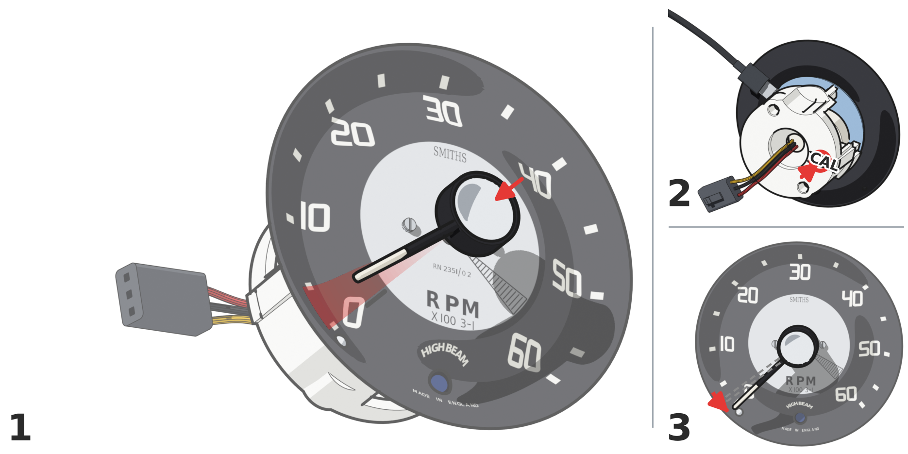
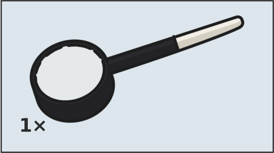
Push the needle on between the 0 and 5 marks, then press CAL again. The needle drives to 0.
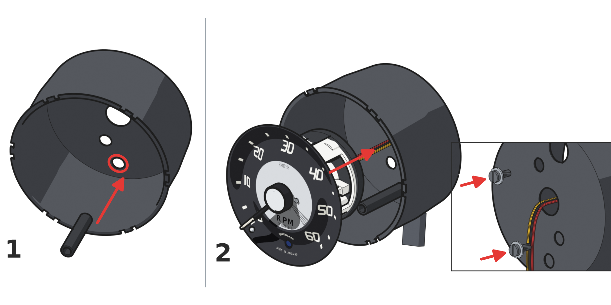
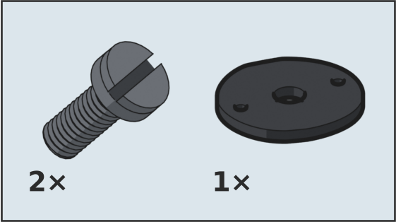
Seat the light tunnel in line with the high-beam window. Unplug the module, feed its leads out through the centre hole and lower it in with the original rubber spacer. From the back, fit the two M4 screws with the original washers.
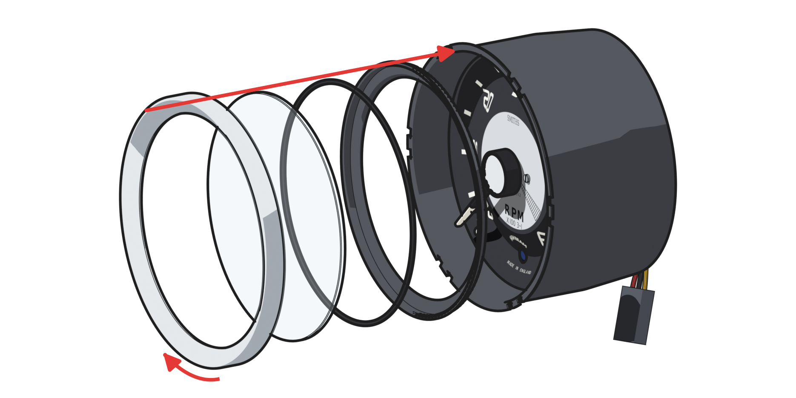
Refit the bezel stack, the reverse of step 4.
Digital manual and instructions